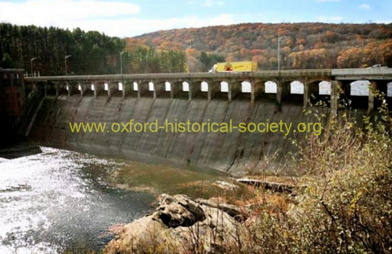

 DAM-WITH-FOLIAGE_POST_2012-PF.jpg
A truck makes its way across the narrow roadway atop the Stevenson Dam, Tuesday, November 9, 2010. Photo Brian A. Pounds / Connecticut Post.
Previous
Thumbnails
Next